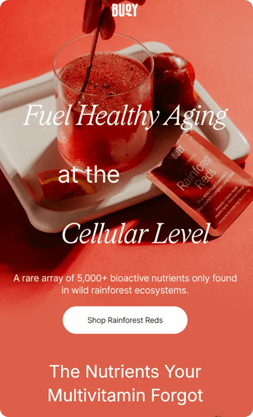
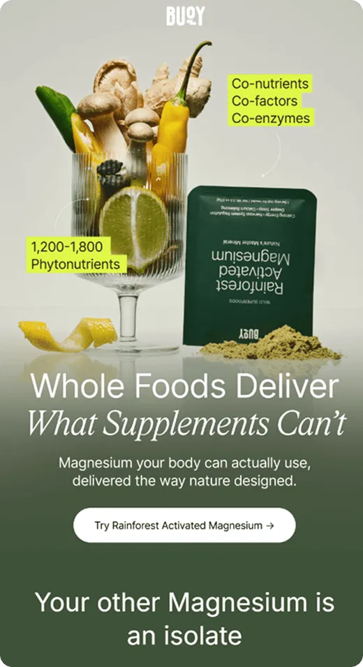
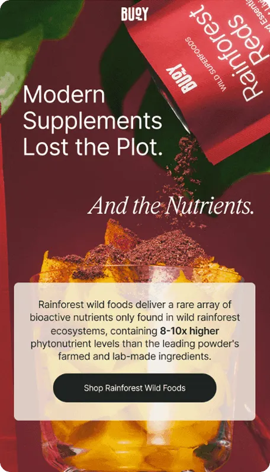

How do you sell supplements in the inbox without overwhelming people with science or losing them before the click? Buoy approaches this challenge with bold color systems, a strong visual identity, and emails that lean heavily into education, sometimes at the expense of clarity and conversion.
In this episode of Feedback Friday, Matt Helbig is joined by Kasey Luck, email marketer and founder of Luck & Co. Agency, to review a series of Buoy emails together. They break down design choices in real time, discuss the balance between education and motivation, and explore how elements such as live text, CTAs, social proof, and incentives impact engagement and conversion.
If you work in email marketing, DTC, or wellness brands, this episode offers practical insights into how to balance visual polish, product education, and conversion-focused messaging in longer promotional emails.
TL;DR
- Educational emails need clear outcomes and motivation to drive clicks
- Live text, spacing, and hierarchy matter more as emails get longer
- Social proof and incentives lose impact when they’re buried too far down
- Strong visual systems help with brand recognition, but don’t replace clarity
Matt Helbig: What’s up, Email Geeks? Welcome back to another episode. We have Kasey Luck joining us once again. Today, we’re reviewing Buoy. Buoy is a brand we’ve had on our radar. We have a few of their emails on the site, and I think we even mentioned them in the Really Good Emails Awards last year. They do some fun things, but we’ve never done a Feedback Friday on them before, so I wanted to get your perspective. Right off the bat, we get this very eye-catching red.
(See the full email)
Kasey Luck: Very intriguing.
Matt Helbig: We’ve talked about this before, but the all-image lockup does feel a bit like a Photoshop file. That said, they do include sections with live text, which I’m excited to look at. As a hero, this works well. I like that they added supporting copy for the CTA. It’s not just “Shop now” or “Learn more.” Tying it more closely to the message works nicely.
Kasey Luck: I like that the paragraph text is short and adapts well to mobile. It’s very easy to read. That text isn’t live text, though, right?
Matt Helbig: Nope. One thing your AI prompts actually pushed me to analyze more closely was CTAs. One recommendation was to focus more on the benefit or outcome. This product might relate to immunity or longevity, so instead of just “Shop,” it could say something like “Sleep better tonight” or “Feel stronger every day.” Connecting the CTA to the outcome could be interesting to test.
Kasey Luck: Yeah, AI is going to put us out of our jobs.
Matt Helbig: Definitely. But I think AI can help with thinking through alternative tests. The human perspective still matters.
Kasey Luck: I agree. That’s a great point.
Matt Helbig: Then they transition into live text, which is great, followed by a section explaining the nutrients missing from multivitamins.
Kasey Luck: This is a lot of text and feels very educational.
Matt Helbig: It feels like reading the back of a product box. It makes sense, but I’d probably lead with customer testimonials before diving into heavy science.
Kasey Luck: Or show the transformation first. What’s the outcome you’re actually selling? That would convince me more than this.
Matt Helbig: Especially with supplements, people are skeptical. They don’t want to waste money. We’ve also seen less interest in supplement emails recently. Testimonials could help provide reassurance. The next section, though, is actually my favorite.
Kasey Luck: The deep red, the live text, the contrast. Everything really pops. The most seductive thing you can do for Matt is live text.
Matt Helbig: Yes. Dark background, good contrast, live text.
Kasey Luck: I agree. This section works really well.
Matt Helbig: On mobile, it’s slightly harder to follow, but it still works. On the desktop, the image and text paired with a strong CTA are excellent. This is the section that really made me want to click.
Kasey Luck: I love the headline, too. “No red flags” ties perfectly into the social proof and the red theme.
Matt Helbig: One thing we’ve talked about before is that five-star ratings can sometimes feel less believable. Uneven numbers, like 4.7, can feel more real. That said, stars are still the clearest way to signal reviews.
Kasey Luck: I agree. Visually, stars immediately tell you this is a review section. Especially paired with the headline, they do their job.
Matt Helbig: I also like the shoppable section at the bottom, especially on mobile. These bottom quick links are becoming more common.
Kasey Luck: I’m a big hater of top navigation menus in emails. We’ve tested them, and they usually lower conversion rates. They distract from the main purpose. Having navigation at the bottom makes much more sense.
Matt Helbig: Social icons used to be a bigger deal. Most people don’t click them now, but I like that they only include the platforms they’re actually active on. The footer feels clean. For me, the hero could use a bit of cleanup. That would really push it over the edge.
(See the full email)
Matt Helbig: Alright, let’s move to the next email. I really like how this brand uses different color themes for each product and fully commits to them. Each product has its own color story, and that really helps the emails stand out.
Kasey Luck: That’s great, but it’s always a challenge to keep things fresh while maintaining brand recognition. You want people to immediately recognize the brand, even without reading the text. That balance is hard to strike when you’re changing themes often.
Matt Helbig: Yeah, even if the logo wasn’t here, I think I’d still understand what the product is. They’ve used their brand identity consistently enough that I could identify this email in my inbox even without the logo, which is really nice.
Kasey Luck: Can we look at the red one again? Do they use packaging as well? Yeah, they use packaging here, and it has a very distinct look. They also use it again in the hero, which really helps. Even with very different color themes, it makes the brand immediately recognizable to me.
Matt Helbig: I like these little callouts, too. There’s an image lockup at the top, but I really like callouts like this. I like the background color and the highlighted, boxed style. It’s a different approach than just changing the text color, and for some reason, it stands out to me. I don’t see this done often, but when it works, it really connects with the product. It’s also still pretty readable on mobile. I like this one.
Kasey Luck: Visually, I agree. But I do wonder if their audience actually knows what all of this means, because honestly, I don’t know what most of these callouts mean.
Matt Helbig: That’s true. How many phytonutrients do you need? I have no idea.
Kasey Luck: That feels like a lot of nutrients.
Matt Helbig: Exactly. I might not be getting enough, but to your point, maybe these callouts could focus more on people’s problems instead. If this language makes sense to their audience and it’s important to them, that’s fine. But using lingo people don’t understand might not be the best approach. What do you think about this long CTA, this chunky button here?
Kasey Luck: How long is too long? It’s a little long, honestly. And what doesn’t help is the complicated wording. “Activated magnesium” feels like a lot. I can live with this button, but something feels off. In this section, there’s a lot of text, and it feels jumbled. They’re trying to create separation with spacing, but it still feels disorganized.
Matt Helbig: There’s no clear separation between sections. Maybe adding a visual divider or an arrow could help block things out a bit more.
Kasey Luck: What do you think about the button itself?
Matt Helbig: I think it’s right on the edge. I’ve seen two-line buttons before, and that feels insane to me. As we talked about earlier, maybe there’s a way to make it shorter and more outcome-focused. Something like “Sleep better now” instead of this longer phrasing could be a good A/B test. As we scroll down, I really like the use of live text here. Then we have this checkbox-style section, which I think is effective. A lot of brands are doing this. The styled bullet helps it stand out. If it were just a white bullet matching the text, it wouldn’t be as effective. Using a different color that ties back to the brand makes everything feel more cohesive.
Kasey Luck: I love the contrast. This actually reminds me of the Single Slice event in San Francisco. The dog brand that was reviewed on stage used a very similar green.
Matt Helbig: Yeah, similar brand colors for sure.
Kasey Luck: I really love this color. It’s such a bright green.
Matt Helbig: This palette works really well. It’s not quite millennial green, but it’s close. I’ve seen a few brands use this, and it feels smart. It’s kind of like a tennis ball color. This section works overall. As you scroll, maybe not every element pops equally, and they could focus more on the most important factors, but as a lockup, it works pretty well. If it were live text, it would be even better.
Kasey Luck: I wonder if we need a button here. How far up is the button?
Matt Helbig: I could see adding one underneath. What’s interesting is that the italic text works earlier, but here it starts to feel more like legal copy.
Kasey Luck: I was thinking the same thing. One thing that’s not working for me is having too many different text formats close together. Each font or style change forces the reader to adjust.
Matt Helbig: We sometimes call this design golf. Too many shifts in typography ask a lot of the reader. There’s a lot of adjustment happening throughout this email. Now we get a similar lockup to the one in the previous email. They’ve reused the same structure but swapped the brand color and images, which is smart. It feels like a different email, but with a consistent layout.
Kasey Luck: The contrast with the stars here is tough. Other than that, this section works well.
Matt Helbig: Maybe the stars could be a slightly different shade of yellow to stand out more against the background. I do like the free self-stirring mug. We’re seeing more brands offer free items instead of discounts, which I think is smart. It feels like a deal without actually discounting the product.
Kasey Luck: My question is, why is it so far down in the email? I’m interested in the mug.
Matt Helbig: I also don’t know what it looks like, which would help.
Kasey Luck: Either way, I’d mention it higher up. If not for magnesium, I’d click for the mug.
Matt Helbig: The mug is a great benefit. Then they transition into a tip section. Nice use of live text and arrows in the headline. It’s cute. The rounded corner lockup makes sense, too. That’s definitely a trend we’ve seen. Rounded corners help soften the brand. They’re using that treatment consistently across images, and it works well for a footer. It ties the different products together nicely.
Kasey Luck: The final CTA mentions securing the last ones. Are they running out?
Matt Helbig: Maybe it’s seasonal. If it’s hydration-related, that would make sense. It’s interesting because this email isn’t really a product launch. It’s educational, then features, then reviews, and it ends with a seasonal angle. It’s a cool approach. They cycle through different color sections across emails, reusing layouts but swapping elements and colors. It’s interesting to see.
Kasey Luck: Overall, both emails do a lot of things visually really well. But I’m not walking away with a clear understanding of what the products actually do for me. Even when I read more closely, I’m still left wondering. I understand that their magnesium is more digestible, but why do I need magnesium in the first place?
Matt Helbig: True. I think they could talk more about why people use it. A lot of people take it for sleep, because it helps them sleep better. But like in the previous email, I’d bring that up much earlier in the main section. Right now, the problem they’re presenting is that the food you’re eating isn’t delivering what you need, so you need supplements. But to your point, you still need motivation to click. For me, it’s the missing urgency or motivation that makes the pain point feel immediate. That pain point, or a bonus like the self-stirring mug, or limited stock, belongs in the hero to drive the click.
Kasey Luck: And again, maybe I’m not the target audience. Maybe everyone else knows what “my medium is for you” means.
Matt Helbig: Alright, now we’ve got this last one. Phytonutrients, another fun word.

Matt Helbig: This one feels weaker to me because it’s very long. There are some interesting sections and design choices, but overall, it feels like a lot. At the top, they’re clearly trying to make the product eye-catching, but again, the text isn’t live. It’s locked to an image and doesn’t work well on mobile. I’m also seeing this blue border. I’m not sure if that’s just how we’re viewing it or if something is breaking, but it looks unintended. As we scroll past that, we get into this comparison section. These “us versus them” tables are becoming more common in emails. What do you think about this approach?
Kasey Luck: I love the idea, and I think they executed it well. It’s challenging to do this in email because the width is limited, but they’ve handled it well on both desktop and mobile, especially on mobile. That said, the table feels too long overall. It looks daunting. Even though it’s designed well, I still don’t want to read it. From the brand side, I understand why this happens. Everything feels important, so you want to include it all. I’d experiment with making it shorter and being more intentional about what stays and what goes. That’s my main note. What do you think?
Matt Helbig: When I looked at it, some of these pain points don’t feel that important to me. If I’m not well-versed in the category, I care more about things like price per serving. Is it cheaper than other green powders? Some of the features here are convincing, like third-party testing, but overall, it’s still a lot, and it doesn’t focus enough on benefits. It’s also hard to know what’s actually true. They’re probably comparing themselves to something like AG1, but some of these claims could apply to other products too. I do like that the chart is live text, and this “us versus them” framing can be effective, but it’s always interesting to see which data points they choose to include. We’re definitely seeing this trend more often. It can be a useful marketing tool when done well.
Kasey Luck: Yeah, it definitely helps position your product clearly when it’s done correctly. This seems like a sizable brand, so they must know what they’re doing. But they lead with “phytonutrients” very heavily, and they use many terms that require education. I wonder how effective that is. If you keep talking about phytonutrients, you also have to keep educating people about them, on top of everything else. A lot of this feels very science-heavy to me. I’m into health and wellness, but even I don’t know what some of this means.
Matt Helbig: Yeah, some terms can be confusing if you’re not familiar with them. Scrolling down, it’s nice to see more live text. That’s one reason this email stood out to me. The stacking on mobile makes sense. But at this point, we’re pretty far from the CTA, and I’m starting to feel like I need a button somewhere. This is a long email.
Kasey Luck: Honestly, the CTA should be right after the table. That’s supposed to be the convincing part, and that’s where I’d want to take action, click to learn more, or even buy. I would definitely add a button there.
Matt Helbig: As we keep scrolling, it starts to feel like we’ve read so much that the email is saying the same thing in different ways, over and over. Some of this may matter to certain people, but for me, it would be better if it were shorter. This layout also isn’t my favorite compared to something more live-text driven. It’s fine, but again, a CTA here would help. It feels like I’ve read the benefits and I’m ready to purchase, but instead, they keep giving more information. This comparison also feels weak because it looks like the same image, just larger. I understand they’re trying to explain something scientific or complicated, but to me, it starts to feel designed by committee. It feels like they included everything they wanted to say, even though people will only read about half of it. At that point, you have to ask what can be cut. Could a section like this be removed, or could it be its own email? It becomes a laundry list, and it’s hard to tell which takeaway is most important because there isn’t enough hierarchy.
Kasey Luck: I do want to defend the brand a little bit. In a previous episode, we reviewed emails for a pelvic health brand, and it was important for them to deeply educate their audience. Their audience actually reads long emails. This could be similar. Maybe this audience needs that education; they’re into the science, and we just don’t connect with it. It could also be something they’ve A/B tested. For some brands, shorter emails perform better, and for others, longer ones do. If they’ve tested this and it works, then that’s fine. But they’re definitely missing buttons.
Matt Helbig: Yeah. I think what’s missing is a clearer “so what” section. The information might be helpful, but what does it actually do for me? Does it mean higher quality? Does it mean better results? I still need a motivator and a clear CTA that tells me what to do next.
Kasey Luck: What does that yellow box say about the US government higher up? It looks like a study excerpt, but again, it doesn’t tell me what difference it makes to me. It’s a lot of numbers and very technical. Is the takeaway that I should have more vitamin C? That’s what it sounds like.
Matt Helbig: That sounds like a personal issue, Kasey. To your point, in the other email where we saw a clinician or a scientist, I feel like I need that here too. I need a scientist in this email. Someone holding a test tube would really help me understand that this product is actually better for me.
Kasey Luck: Yeah, the US government study is interesting, but I don’t know if it’s meant to be believable or not.
Matt Helbig: Some of this information might be helpful, but when I think about what actually motivates me, it doesn’t quite get there. This feels more like landing page content that could be important to someone, but for me, it’s not enough to drive the click. Based on some of the email breakdowns you’ve done, there are different levers you can pull. Education is one of them, but for many people, levers like urgency, price, or scarcity are often stronger. Without some of those elements, getting the click becomes harder, and the email starts to feel more like a generic newsletter rather than something with a clear message or point of view.
Kasey Luck: I also don’t know how much this product costs. I’d assume it’s on the more expensive side, and if so, they should be doing more to address price hesitation, as you mentioned. Things like showing the price per serving, or using other smart ways to frame cost and value so it feels more approachable, would really help. We haven’t seen that across these three emails, and I think that’s a significant missed opportunity.
Matt Helbig: Yeah. Alright. Then we get to this small lockup section here. Here it is, the free mug, in red.
Kasey Luck: I don’t know why it’s so far down in the email. From what we’ve seen, they’re actively prioritizing product education and focusing on educating their audience. But maybe the free mug is actually what gets people to convert.
Matt Helbig: Yeah. I think sometimes brands expect people to read an entire email like a book. The real question is: where is the most important information? If you want to include secondary sections, that’s fine, but they could live underneath the main call to action. At a certain scroll depth, I should already have all the information I need to make a decision. I can always read more below. If some of these elements are meant to drive purchase, a clear value-add, like a free item, really stands out. That could have surfaced earlier. Overall, the email could be a bit tighter. We don’t have the full context. Maybe they have a strong abandoned cart flow where additional levers come into play. The emails are very beautiful and well-designed, but when you look more closely at the content, you start to see opportunities to test and improve.
Kasey Luck: I agree.
Matt Helbig: Awesome. Thanks so much, Kasey. I really enjoyed you putting on your feedback hat and joining me this week. This was a lot of fun. Where can people find you online?
Kasey Luck: Thank you. I’m on YouTube. I have a channel where I share a lot of free content under the name Kasey Luck. You can also check out my agency, Luck and Co. Agency. We do email and SMS for e-commerce.
Matt Helbig: Thanks so much for joining us this week. See you next time.